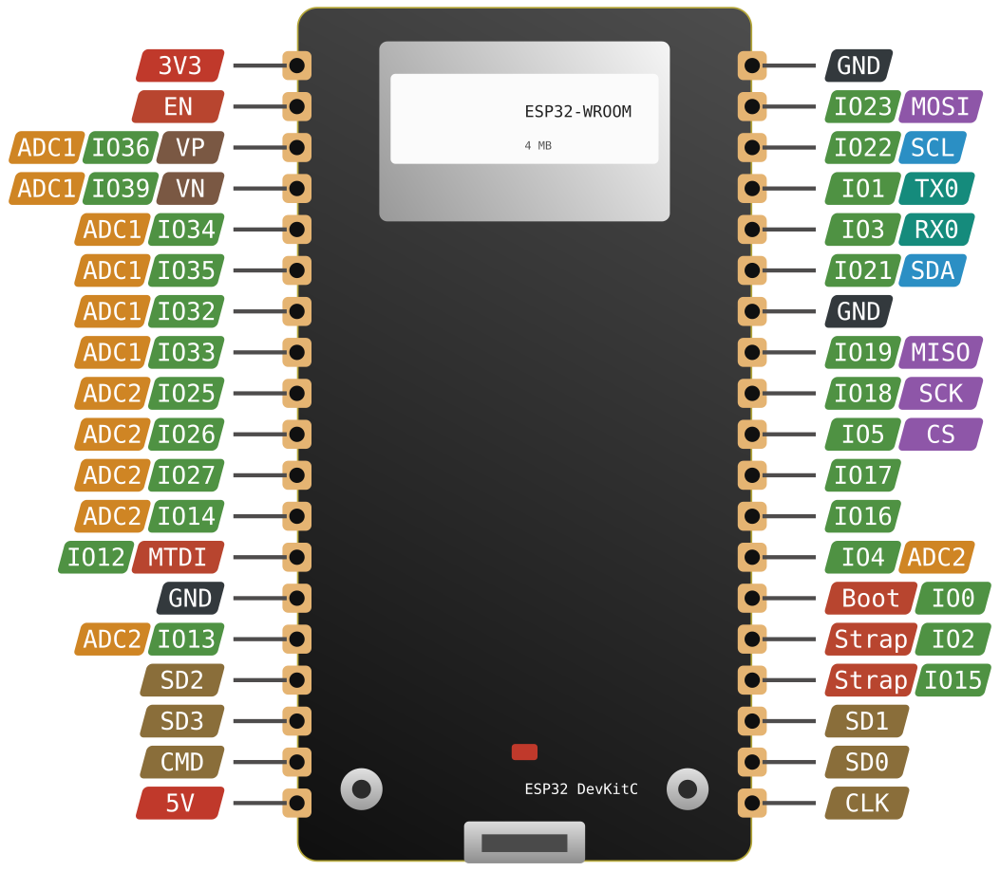

ESP32 DevKitC / WROOM-32
pov-esp32SuperGreenOSsqueezeliteBLE-KeyboardWLED
ESP32-D0WD · 4 MB · 2× 240 MHz

GPIO-Klassen — was du wirklich benutzen darfst
| Klasse | Pins | Konsequenz |
|---|---|---|
| Tabu | 6, 7, 8, 9, 10, 11 | Interner SPI-Flash. Anfassen = Board tot. |
| Nur Eingang | 34, 35, 36, 39 | Kein Ausgang, kein interner Pull-up — extern beschalten. |
| Strapping | 0, 2, 5, 12, 15 | Bestimmen den Boot-Modus, siehe Abschnitt 09. |
| ADC1 | 32–39 | Funktioniert bei aktivem WLAN. |
| ADC2 | 0, 2, 4, 12–15, 25–27 | Unbrauchbar, solange WLAN läuft. |
| Unkritisch | 4, 13, 14, 16, 17, 18, 19, 21, 22, 23, 25, 26, 27, 32, 33 | Die üblichen Verdächtigen für LED-Daten, I²C, SPI. |
pov-esp32 braucht APA102. Die Bibliothek nutzt Adafruit DotStar — WS2812B wird ausdrücklich nicht unterstützt. Bei POV ist das kein Verlust: APA102 taktet um Größenordnungen schneller, WS2812 würde bei rotierender Anzeige sichtbar schmieren.